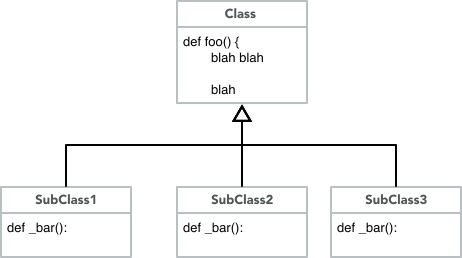
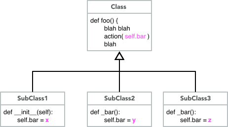
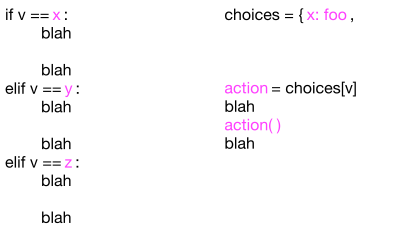

Refactoring Repetitive Code
Contents
Refactoring Repetitive Code#
DRYing out repetitive code#
A key feature of classes and objects is the ability to reduce repetitive code, following the DRY (Don’t Repeat Yourself) principle. If several related classes need an identical method, we prefer to write it once in a common superclass and inherit it into multiple subclasses.
Identical methods is the easy case. What about almost identical methods, in which behavior of some method follows the same pattern in a group of related classes, but differs in some small, identifiable way?
Factor it#
The first step in reducing redundancy is to identify exactly what is the same and what differs between methods with repetitive code. Sometimes this is easy. Often it is not. We’ll have more to say about that below.
For the moment, we’ll assume you have identified a pattern of common code and variation among several methods in subclasses of a common parent class.

We’ll look at two approaches to factoring the redundant method, and then at refactoring code in conditionals that may or may not appear in a method.
Factoring into a method#
Sometimes the variation among the redundant methods can be factored out into a separate method that can be called from the redundant methods. The variations can be coded as a new method in each of the subclasses, while the common code is inherited from a single method in the superclass:

The inherited method appears only in the superclass and is inherited into each subclass, where it calls the appropriate factored method in each subclass.
Refactoring into a variable#
When we refactor redundant code, we often look for ways to move complexity from code to data. Sometimes we can find a way to write the code just once by introducing one or more variables and using different variable values in each subclass. Again the method can be written just once and inherited into each subclass, but each subclass sets the appropriate variable value(s):

Refactoring branching logic#
Sometimes the redundant code, whether in a method or not,
is in a chain of if/elif/elif/… branches, or something
equivalent. In this case, the particular code to
execute does not vary depending on the class, but rather
depending on the value of a variable, but it may not be
as simple as, for example, using that value in a calculation
or string. In such a case, we may be able to replace
the chain of if/elif/elif/… with a table lookup.
In Python, we would typically implement such a table
as a dict:

In the diagram above, the redundant code has been
refactored into three methods, foo, bar, and zot.
In other cases, the table values might themselves be
dict structures containing sets of variables, or
complex objects, or keys to other tables.
The real trick is isolating variation#
We’ve illustrated three ways to refactor code when you have identified exactly what is the same and what the variations are between different blocks of code, either whole methods or branches in a complex branching structure. The good news is that Python provides lots of ways to refactor with dynamic dispatch of methods and with tables. The bad news is that the actual refactoring is the easy part. The hard part is recognizing and isolating the code to be refactored.
Code can be beautiful. One of the ways in which
code can surprise us with its beauty is by being
much simpler and more compact than we expected,
because the programmer has seen
deep patterns that we didn’t anticipate.
Recognizing those patterns takes time and practice.
Don’t be frustrated if they elude you at first.
But start practicing, and never stop.